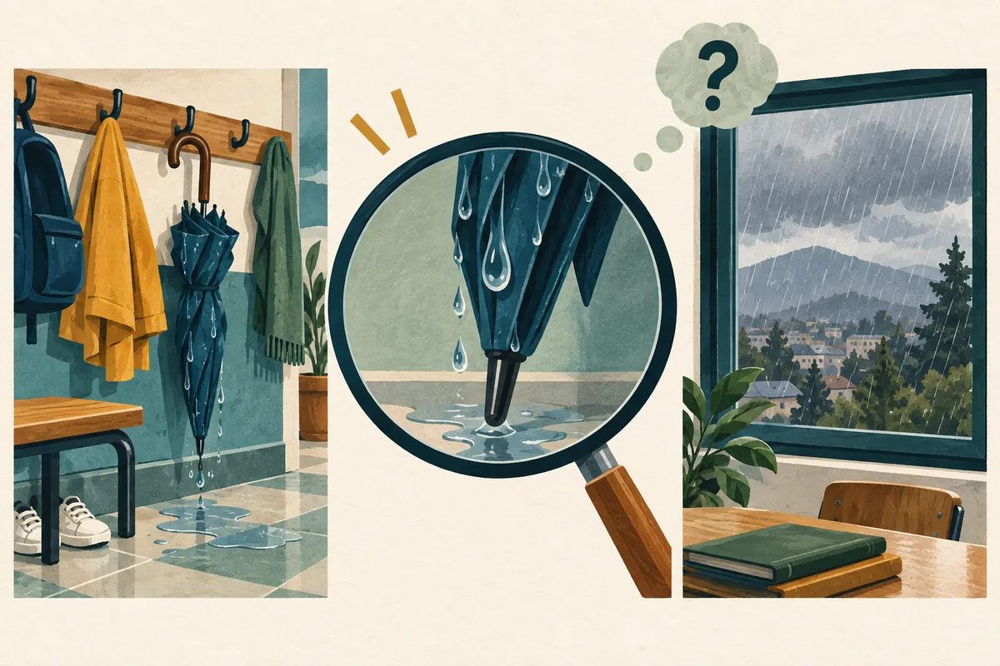

Competencia Lectora · Lectura acompañada
Localizar e interpretar
Distinguir información explícita, síntesis e inferencia y justificar cada decisión con el texto.
1 lectura breve · 6 preguntas · Acceso individual asignado · Sin límite de tiempo
Guía 1
Localizar e interpretar
6 preguntas · Sin límite de tiempo
Objetivo de la clase
Localizar información explícita e interpretar relaciones entre ideas, justificando las respuestas con evidencia y sin agregar datos que el texto no permite.
¿Qué aprenderé a hacer?
- Distingo una información literal de una paráfrasis.
- Relaciono pistas para sostener una inferencia.
- Explico qué parte del texto respalda mi elección.
Instrucciones de trabajo · Antes de comenzar
Necesitas esta guía y tu cuaderno. Trabaja de forma individual; conversa sobre el ejemplo cuando el docente lo indique.
- Lee el objetivo, activa lo que sabes y observa el esquema y el ejemplo resuelto.
- Lee el texto breve completo. Avanza una pregunta a la vez; puedes escuchar la lectura y volver a ella.
- Responde las seis preguntas usando las pistas de procedimiento. Esta práctica acompañada mantiene los apoyos.
- Marca una alternativa A–D por pregunta. Usa «Marcar para revisar» si tienes dudas y vuelve al texto antes de decidir.
- En «Revisión y entrega», revisa el mapa. Se recomienda escribir una evidencia y explicar un descarte; estas reflexiones son opcionales y no impiden entregar.
- Comprueba «Guardado en línea» y pulsa «Entregar». La entrega cierra el intento; espera su confirmación. Cuando el docente publique los resultados, analiza los errores y realiza la transferencia.
Las actividades señaladas «En tu cuaderno» se trabajan fuera de la página; no se guardan automáticamente.
- 1Comprende el objetivo
- 2Observa el modelo
- 3Practica con apoyo
- 4Revisa y entrega
- 5Analiza y transfiere
Aprende la estrategia · Explica y modela: ATENCIÓN
Activa lo que sabes · En tu cuaderno
En tu cuaderno, explica la diferencia entre «lo dice el texto» y «puedo concluirlo a partir del texto». Añade un ejemplo cotidiano.
Comprende · Relaciona · Aplica
De lo que el texto dice a lo que permite concluir
Localizar es recuperar información escrita, aunque la pregunta la reformule. Interpretar es construir un significado al relacionar pistas. Antes de responder, distingue cuál de estas operaciones necesitas: una frase puede sonar razonable y, aun así, no estar respaldada por la lectura.

Ilustración didáctica creada con IA · Escena ficticia, no evaluada
Lee la imagen · En tu cuaderno
Si solo observas el paraguas mojado, ¿puedes asegurar que llovió? ¿Qué otro dato necesitarías?
Contrasta tu observación
No: también pudo mojarse de otra manera. Una afirmación del relato sobre la lluvia o una segunda pista pertinente permitiría sostener mejor esa explicación. El dibujo enseña la diferencia; no documenta un hecho real.
Avanza un bloque a la vez. Lee o escucha con apoyo la explicación; después cuéntala con tus palabras. Puedes cerrar cada bloque antes de continuar. Estas comprobaciones son formativas: no tienen puntaje ni se guardan en línea.
1. Comprende los conceptos
Información explícita
Está afirmada en el texto. No necesita aparecer con las mismas palabras de la alternativa: «pospuso la reunión» y «dejó la reunión para después» pueden expresar lo mismo. Comprueba quién realiza la acción, qué ocurre y bajo qué condición.
Paráfrasis y referente
Una paráfrasis conserva el sentido, no solo el tema. «Algunos vecinos» no equivale a «todos los vecinos». Un referente es aquello a lo que apunta una expresión como «ella», «ese acuerdo» o «lo anterior»: recuperarlo evita atribuir una decisión a la persona equivocada.
Inferencia y alcance
Una inferencia no se copia: se deriva de información disponible. Debe explicar las pistas sin incorporar una historia inventada. Distingue lo posible, lo probable y lo establecido. El conocimiento cotidiano ayuda a comprender; no puede reemplazar la evidencia que falta.
2. Aplica la estrategia paso a paso
- Comprende el conjunto
Lee el texto completo y expresa de qué trata. Esto te permite ubicar cada dato sin aislar una frase de su contexto.
- Delimita la tarea
Relee la pregunta y precisa persona, momento y aspecto consultado. Decide si pide recuperar un dato o relacionar información.
- Vuelve a la evidencia
Localiza la afirmación o reúne las pistas necesarias. Revisa negaciones, cantidades y condiciones; esas palabras modifican el alcance de la respuesta.
- Contrasta y confirma
Compara todas las alternativas con la evidencia. Descarta la que cambia el referente, exagera o añade una causa. Luego verifica que la elegida responda exactamente lo preguntado.
3. Sigue un ejemplo razonado
Ejemplo de enseñanza · No pertenece a las preguntas evaluadas
A las ocho, Inés llegó al taller. Encontró la puerta cerrada y leyó un aviso: «Hoy abrimos a las nueve». Se sentó en el banco de enfrente.
Pregunta del modelo
¿A qué hora abriría el taller y qué sugiere que Inés se siente enfrente?
Pienso en voz alta
Primero recupero «a las nueve»: es un dato explícito, aunque la respuesta diga «una hora después de su llegada». Después relaciono el aviso con la acción de sentarse cerca. Es razonable interpretar que espera la apertura. No afirmo que esté enojada: el texto no describe su emoción.
Conclusión justificada
A las nueve. Su conducta sugiere que espera que abran; esta segunda respuesta es una inferencia, no una afirmación literal.
4. Comprueba y prepara la práctica
Ahora explica tú · En tu cuaderno
En «Solo dos equipos entregaron antes del recreo», ¿«todos entregaron temprano» es una paráfrasis válida? Explica qué palabra decide tu respuesta.
Revisa después de responder
No. «Solo dos» limita la cantidad; «todos» la amplía. Una paráfrasis válida sería «Dos equipos, y no más, entregaron antes del recreo». No basta conservar la idea general de entregar.
Prepara la transferencia
Antes de practicar, escribe dos columnas: «El texto afirma» y «Las pistas permiten inferir». Si mezclas ambas, vuelve al ejemplo y señala qué parte copiaste y qué relación construiste.
Si tu explicación no coincide, identifica el dato o la relación que omitiste. Vuelve al paso correspondiente y ensaya de nuevo antes de pasar a las preguntas.
- Texto¿Qué se afirma?
- Evidencia¿Dónde se sostiene?
- Respuesta¿Conserva el sentido?
La paráfrasis cambia las palabras, no la información. La inferencia conecta pistas: no completa el texto con una suposición personal.
Otro ejemplo para consolidar
Revisa tus decisiones
El asterisco indica una pregunta marcada para revisar.
Puedes entregar con preguntas pendientes. Revisa el mapa antes de confirmar: la entrega cierra el intento.
Entrega confirmada
Las respuestas quedaron registradas. Los resultados se mostrarán cuando el profesor los publique.
Volver al portal PAESCierre de la clase · En tu cuaderno
¿En qué decisión estuviste a punto de agregar información? Escribe cómo la comprobaste.
Contrasta tu explicación con los criterios del objetivo. Esta reflexión no modifica tus respuestas ni se guarda en línea.
Analiza el error y transfiere
Este resultado describe esta actividad; no equivale a un puntaje PAES.
Vuelve a tus respuestas. Compara tu evidencia con la explicación de cada alternativa y escribe una regla para no repetir el error.
Resuelve la transferencia en tu cuaderno. No modifica el intento entregado.